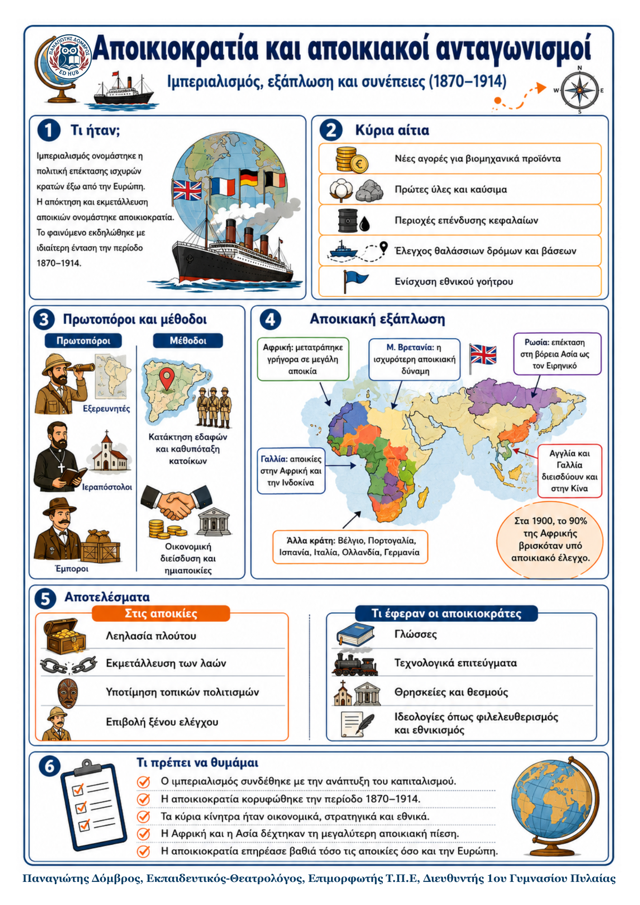

Δεν βρέθηκε η λέξη ή η φράση μέσα στην ενότητα.
1Η βασική ιδέα
Από το 1870 ως το 1914, ισχυρά ευρωπαϊκά κράτη επιδίωξαν να ελέγξουν περιοχές έξω από την Ευρώπη. Αναζητούσαν αγορές, πρώτες ύλες, καύσιμα, επενδύσεις και στρατηγικές βάσεις. Η πολιτική αυτή ονομάστηκε ιμπεριαλισμός και εκφράστηκε κυρίως με την αποικιοκρατία.
2Αίτια της αποικιοκρατίας
- • Οικονομικά: νέες αγορές, πρώτες ύλες, πετρέλαιο και επενδύσεις κεφαλαίων.
- • Στρατηγικά: έλεγχος θαλασσών, λιμανιών και βάσεων για τους πολεμικούς στόλους.
- • Πολιτικά: ενίσχυση της ισχύος, του κύρους και του εθνικού γοήτρου.
- • Ιδεολογικά: εθνικιστικά ρεύματα πρόβαλλαν την υποτιθέμενη «ανωτερότητα» των κατακτητών.
3Πρωτοπόροι και μέθοδοι
Εξερευνητές, ιεραπόστολοι και έμποροι άνοιγαν τον δρόμο για την ευρωπαϊκή παρουσία. Η επέκταση γινόταν με δύο τρόπους:
1. Κατάκτηση εδαφών και υποταγή των κατοίκων.
2. Οικονομική διείσδυση σε ανεξάρτητα κράτη, που μετατρέπονταν σε
ημιαποικίες.
4Ορισμοί – γλωσσάρι
Ιμπεριαλισμός: πολιτική επέκτασης και ελέγχου από ισχυρά κράτη.
Αποικιοκρατία: κατάκτηση και διοίκηση ξένων περιοχών από μια μητρόπολη.
5Η αποικιακή εξάπλωση
Η Μεγάλη Βρετανία ήταν η ισχυρότερη αποικιακή δύναμη. Έλεγχε τον Καναδά, την Αυστραλία, τη Νέα Ζηλανδία, την Ινδία, τη Νότια Αφρική και στρατηγικά σημεία, όπως τη Μάλτα και την Κύπρο.
Η Γαλλία κατείχε περιοχές στην Αφρική και στην Ινδοκίνα. Αποικίες είχαν επίσης το Βέλγιο, η Πορτογαλία, η Ισπανία, η Ιταλία, η Ολλανδία και η Γερμανία. Η Ρωσία επεκτάθηκε στη βόρεια Ασία, ενώ Αγγλία και Γαλλία διείσδυσαν στην Κίνα.
6Αποτελέσματα
• Ο πλούτος των αποικιών λεηλατήθηκε και οι κάτοικοι υπέστησαν σκληρή εκμετάλλευση.
• Οι τοπικοί πολιτισμοί υποτιμήθηκαν και οι λαοί θεωρήθηκαν κατώτεροι.
• Μεταφέρθηκαν ευρωπαϊκές γλώσσες, θρησκείες, θεσμοί, ιδεολογίες και τεχνολογία.
• Οι ανταγωνισμοί των αποικιακών δυνάμεων αύξησαν την ένταση στις διεθνείς σχέσεις.
Σημαντικό: Στα 1900, το 90% της Αφρικής και μεγάλο μέρος της Ασίας βρίσκονταν υπό αποικιακό έλεγχο.
7Τι πρέπει να θυμάμαι
• Η αποικιοκρατία κορυφώθηκε την περίοδο 1870–1914.
• Βασικά αίτια ήταν οι αγορές, οι πρώτες ύλες, οι επενδύσεις, οι βάσεις και το εθνικό γόητρο.
• Η Βρετανία και η Γαλλία δημιούργησαν τις μεγαλύτερες αποικιακές αυτοκρατορίες.
• Οι αποικίες υπέστησαν οικονομική εκμετάλλευση και πολιτισμική υποτίμηση.
• Οι αποικιακοί ανταγωνισμοί όξυναν τις σχέσεις ανάμεσα στα ευρωπαϊκά κράτη.
